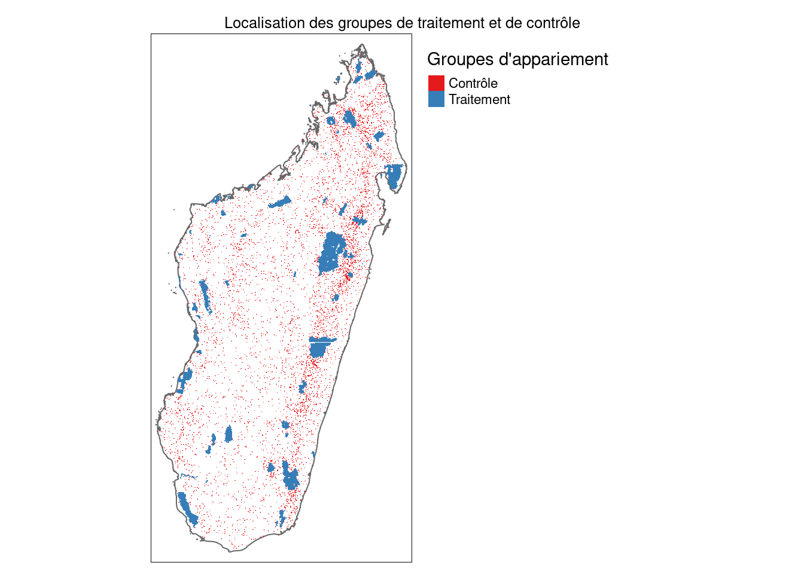

Impact des aires protégées sur la déforestation à Madagascar
Author
Florent Bédécarrats, Jeanne de Montalembert, Marin Ferry et Kenneth Houngbedji
Published
September 4, 2022
Code
# # Le package est en cours de développement, toujours installer la version en coursremotes::install_github("mapme-initiative/mapme.biodiversity", upgrade ="always")librairies_requises <-c( # On liste les librairies dont on a besoin"dplyr", # Pour faciliter la manipulation de données tabulaires"tidyr", # Pour reformater les données (pivots...)"sf", # Pour faciliter la manipulation de données géographiques"wdpar", # Pour télécharger simplement la base d'aires protégées WDPA"tmap", # Pour produire de jolies carte"geodata", # Pour télécharger simplement les frontières administratives"tidygeocoder", # pour obtenir les coordo GPS d'un point à partir de son nom"maptiles", # Pour télécharger des fonds de carte "purrr", # Pour utiliser des formes fonctionnelles de programmation (ex. map)"mapme.biodiversity", # Acquisition et traitement des données du projet"plm", # Linear Models for Panel Data and robust covariance matrices"stargazer", # Reformater de manière plus lisible les résumé des régressions"MatchIt", # Pour le matching#"glm", # Modèles linéaires généralisés (pour le PSM)"optmatch", # Fonctions d'optimisation du matching"cobalt") # Tables et graphs d'équilibre des groupes de matching# On regarde parmi ces librairies lesquelles ne sont pas installéesmanquantes <-!(librairies_requises %in%installed.packages())# On installe celles qui manquentif(any(manquantes)) install.packages(librairies_requises[manquantes])# On charge toutes les librairies requisesinvisible(lapply(librairies_requises, require, character.only=TRUE))# Système de coordonnées géographiques utilisées pour le projet : EPSG:29739mon_scr <-"EPSG:29739"# correspondant à Tananarive / UTM zone 39S# Surface des hexagones en km2taille_hex <-5# Taille des titres des cartestaille_titres_cartes =0.8# on crée un dossier de données si pas déjà disponibledir.create("data_s3")# Désactiver les notations scientifiquesoptions(scipen =999)
Idées pour la structuration du cours
Principe d’organisation
Les ateliers dureront 5 jours, suivis d’1/2 journée de restitution, avec 25 participants par atelier (~125 au total). On veillera à diviser l’atelier en sous-groupes en essayant d’avoir dans chaque groupe au moins un participant ayant quelques compétences économétrie et un participant capable de déchiffrer un texte en anglais.
Pour capter et retenir l’attention d’apprenants ayant des niveaux hétérogène, la proposition serait d’alterner des séances très spécifiques/concrètes avec des séances plus théoriques/méthodologiques. On pourrait ainsi avoir une approche itérative, avec une durée des sections qui reste à déterminer (entre 1/2 et 1 journée ?).
Programme (première ébauche à discuter)
Le programme qui suit n’est qu’une proposition pour alimenter la réflexion collective :
Section 1 - Définition des objectifs de l’évaluation (1/4 journée ?)
Qu’est-ce qu’une évaluation d’impact au sens économétrique du terme ? Quels sont les autres types d’évaluation et quelle est la différence ? Place centrale d’une question évaluative précise pour les évaluations d’impact : impact de quoi (intervention), sur qui (groupe de traitement), sur quoi (variable de résultat). Les EI évaluent un mode d’intervention, pas un projet en particulier : enjeux de validité interne et validité externe.
Exercice : Formuler des questions se prêtant à une évaluation d’impact sur des enjeux de conservation.
Discussion : Approches évaluatives différentes qu’on peut porter avec d’autres méthodes (approches quali ou évaluation “classique”).
Synthèse : introduction succincte au formalisme des équations et aux DAG.
Compte tenu de la portée générale des EI, il n’est pas pertinent de les mener pour chaque projet/situation particulière : il est donc essentiel de commencer par une bonne revue de littérature pour savoir si le mode d’intervention qui nous intéresse a déjà été évalué dans un contexte analogue. Cette session présente les outils et méthodes de revue de littérature applicables aux évaluations d’impact.
Google Scholar : présentation de l’outil et recommandations pour trouver des évaluations d’impact pertinentes (recherche avancée, similaires et citations).
Exercice : utiliser Google Scholar pour mener une revue de littérature sur le thème de l’impact des aires protégées, au niveau mondial, régional (ex. Afrique) ou national (Madagascar)
Présentation des bases d’évaluation d’impact (p. ex. Campbell Collaboration). Focus sur la base d’évaluations d’impact du 3IE.
Synthèse théorique : Présentation rapide des revues systématiques ;: méthode, portée et limites.
Séance 3 - étude d’articles et synthèse (1/2 journée ?)
Les formateurs distribuent aux participant un article court sur l’évaluation de l’impact des aires protégées sur la déforestation. Les apprenants le lisent. Les formateurs en font une synthèse en renseignant plusieurs critères : discipline des auteurs, périmètre de l’étude, données mobilisées, unités comparées, taille d’échantillon, méthode, spécifications du modèle (variable de traitement, de contrôle, et de résultat), résultat.
Exercice : les étudiants se voient chacun remettre un article (en français) et remplir la ligne
Synthèse théorique : tableau complété de revue de la littérature.
Code
# On initie un tableau viderevue_litt <- tibble::tibble(`Référence`=character(),`Titre`=character(),`Discipline des auteurs`=character(),`Périmètre d'analyse`=character(),`Données mobilisées`=character(),`Unités comparées`=character(),`Taille d'échantillon`=character(),`Méthode d'attibution`=character(),`Variable de traitement`=character(),`Variables de contrôle`=character(),`Variable de résultat`=character(),`Résultats`=character())# On remplit autant de "fiches" que de références pour composer le tableau finalrevue_litt <- revue_litt %>%add_row(`Référence`="",`Titre`="",`Discipline des auteurs`="",`Périmètre d'analyse`="",`Données mobilisées`="",`Unités comparées`="",`Taille d'échantillon`="",`Méthode d'attibution`="",`Variable de traitement`="",`Variables de contrôle`="",`Variable de résultat`="",`Résultats`="")
Séance 4 - Sources de données (1/2 journée ?)
Ouvrir les participants sur la diversité des données qui peuvent être mobilisées pour évaluer l’impact de solutions, projets ou politiques publiques : données d’enquêtes, recensements, systèmes d’information (administratifs/gestion), données satellitaires, nouveaux jeux composites. Avantage et limites de ces sources de données. Présentation de sources potentielles : IHSN, institut national de statistique, Protected Planet, FAO… (préparer un tableau de synthèse ?)
Exercice : recherche de source de données pertinentes pour étudier l’impact des aires protégées sur la déforestation.
Présentation d’outils facilitant la collecte : Google Earth Engine (catalogue) et mapme.biodiversity.
Exercice : essai de recherche de données.
Synthèse : enjeux de compatibilité des mailles spatiales, temporelles, unités…
Séance 5 - Traitement des données (1 jour ?)
Présentation des principaux logiciels/langages : R, Python, Stata, Google Earth Engine, et ressources pour l’auto-formation.
Discussions : expériences et avantanges/inconvénients des logiciels à base de code.
Focus sur R : langages, librairies, ressources, types de documents de travail (R, RMarkdown, Quarto, Shiny…) et documents en sortie (présentations, LaTeX/pdf, html, Word, applications interactives…).
Exercice : prise en main de R, premier rendus
Présentation de l’étude de cas sur les aires protégées à Madagascar : section “Traitement de données” plus bas.
Séance 6 - analyse de données (2 jours ?)
Reprise des différentes approches d’inférence causale. Focus sur les méthodes de matching. Présentation de l’approche “naïve” de matching.
Discussion : interprétation du code exécuté.
Exercice : que faut-il comparer avec quoi.
Présentation des principes de base du matching.
Exercice : lister les méthodes de matching.
Comparaison des résultats en sortie.
Synthèse : importance d’avoir une discussion de fond : ATT, ATE, sélection des approches, validation.
Séance 7 - Interprétation des résultats et discussion (1/2 journée ?)
Cas d’étude : évaluation de l’impact des aires protégées sur la déforestation àà madagascar
Environnement et paramétrages
L’analyse est réalisée en R, qui est à la fois un logiciel et un langage open sources dédiés à l’analyse de données. Les traitements sont réalisés en Rmarkdown. Le même code source peut générer un rendu en LaTeX/PDF, HTML ou Word.
On réutilise en partie le code publié par Johannes Schielein: Jochen Kluve, Johannes Schielein, Melvin Wong, Yota Eilers, The KfW Protected Areas Portfolio: a Rigorous Impact Evaluation, KfW, 2022-07-08.
On s’appuie sur le package R {mapme.biodiversity}, développé par la KfW dans le cadre de l’initiative commune MAPME qui associe la KfW et l’AFD. Le package {mapme.biodiversity} facilite l’acquisition et la préparation d’un grand nombre de données (CHIRPS, Global Forest Watch, FIRMS, SRTM, Worldpop…) et calculer un grand nombre d’indicateurs de manière harmonisée (active_fire_counts, biome classification, land cover classification, population count, precipitation, soil properties, tree cover loss, travel time…). Une documentation riche est disponible sur le portail dédié du package en question.
On mobilise aussi les codes d’analyse d’impact développés par la même équipe et mise à disposition dans le dépôt Github: https://github.com/openkfw/mapme.protectedareas. Le code développé par l’équipe est assez complexe. A des fins pédagogiques et pour s’assurer qu’on l’a bien compris, on propose ici une version simplifiée (en cours de développement)
Les sources pour l’ensemble du code source et du texte du présent document est accessible sur Github à l’adresse suivante : https://github.com/fBedecarrats/deforestation_madagascar. Les analyses sont menées sur la plateforme SSP Cloud, mise à disposition par l’INSEE pour les data scientist travaillant pour des administrations publiques. Il s’agit d’une instance de stockage de données massif (S3) et de calcul haute performance (cluster Kubernetes) disposant d’une interface simplifiée permettant à l’utilisateur de configurer, lancer et administrer facilement des environnements de traitement de données (RStudio server, Jupyter lab ou autres…). Le code est conçu pour s’exécuter de la même manière en local sur un PC, mais la préparation des données sera certainement beaucoup plus longue à exécuter.
Préparation des données
Les données spatialisées à croiser son, pour certaines, des données vectorielles (aires protégées, frontières administratives) et, pour d’autres, des données matricielles (“raster data”, en anglais).
Aires protégées
Les données d’aires protégées sont issues de la base WDPA, consultable en ligne sur protectedplanet.org.
Code
# Ce qui suit jusqu'à la commande "save" ne s'execute que si le résultat n'a pas# déjà été généré lors d'une exécution précédente.if (file.exists("data_s3/aires_prot_mada.rds")) {load("data_s3/aires_prot_mada.rds")} else {# Téléchargement et chargement dans R des données d'aires protégées malgaches aires_prot_mada <-wdpa_fetch("Madagascar", wait =TRUE,download_dir ="data_s3/WDPA") %>%st_transform(crs = mon_scr) %>%filter(STATUS !="Proposed") %>%filter(DESIG !="Locally Managed Marine Area", DESIG !="Marine Park") # Téléchargement du contour des zones émergées de Madagascar contour_mada <-gadm(country ="Madagascar", resolution =1, level =0,path ="data_s3/GADM") %>%st_as_sf() %>%st_transform(crs = mon_scr)# On sauve les objets créés pour ne pas avoir à refaire cette étapesave(aires_prot_mada, contour_mada, file ="data_s3/aires_prot_mada.rds")}tb <- aires_prot_mada %>%filter(STATUS !="Proposed", MARINE !=2) %>%mutate(decennie_creation = STATUS_YR - STATUS_YR %%10,strict = IUCN_CAT %in%c("I", "II", "III", "IV"),surface_terrestre = REP_AREA - REP_M_AREA) %>%group_by(decennie_creation, strict) %>%summarise(N =n(),aire_totale =sum(surface_terrestre, na.rm =TRUE))# On génère un rendu cartographiquetm_shape(contour_mada) +tm_polygons() +tm_shape(filter(aires_prot_mada)) +tm_polygons(col ="IUCN_CAT", alpha =0.6, title ="Catégorie IUCN") +# NB : on note les positions en majuscules quand on veut coller aux margestm_credits("Sources: WDPA et GADM", position =c("RIGHT", "BOTTOM"),size =0.6) +tm_layout(main.title ="Aires protégées de Madagascar",# NB : position en minuscules pour laisser un espace avec la margemain.title.position =c("center", "top"),main.title.size = taille_titres_cartes,legend.position =c("left", "top"),legend.outside =TRUE)
Certaines améliorations doivent encore être apportées, pour préciser notamment la date de création ou le statut de certaines aires => A travailler avec Jeanne notamment.
Il faut aussi s’assurer qu’on filtre bien les entitées analysées selon un criète pertinent. Actuellement, on ne garde que les aires qui ont encore un statut “proposed” et on exclut les aires marines. Il pourrait toutefois sembler utile d’écarter les aires dont le statut de protection est considéré comme trop faible. Il pourrait aussi être pertinent de ne garder que les aires protégées comportant un niveau minimum de couvert forestier : autrement, cela signifie que la forêt n’est pas un habitat pertinent pour les écosystèmes que la démarche de conservation cherche à protéger dans cette aire.
Données satellitaires
Ici le package mapme.biodiversity développé par la KfW est particulièrement utile pour l’analyse. Il automatise en large partie le processus d’acquisition de données brutes issu de sources divers et le calcul d’indicateurs pour des périmètres définies (ici, les 120 612 hexagones du maillage du territoire malgache). Ce processus est toutefois très gourmand en ressources et on l’a réalisé sur un environnement de calcul haute performance (la plateforme SSP Cloud de l’INSEE). Les résultats de ces traitements ont été enregistrés et il ne semble pas pertinent/utile de demander aux apprenants de le refaire, ce serait beaucoup trop long.
Code
# Ce qui suit jusqu'à la commande "save" ne s'execute que si le résultat n'a pas# déjà été généré lors d'une exécution précédente.if (file.exists("data_s3/grille_mada_donnees_raster.rds")) {load("data_s3/grille_mada_donnees_raster.rds")} else {# Création d'un maillage du territoire émergé --------------------------------# On crée un cadre autour des aires protégées du pays cadre_autour_mada =st_as_sf(st_as_sfc(st_bbox(aires_prot_mada)))# Cellules de 5km de rayon surface_cellule <- taille_hex * (1e+6) taille_cellule <-2*sqrt(surface_cellule / ((3*sqrt(3) /2))) *sqrt(3) /2 grille_mada <-st_make_grid(x = cadre_autour_mada,cellsize = taille_cellule,square =FALSE)# On découpe la grille pour ne garder que les terres émergées cellules_emergees <-st_intersects(contour_mada, grille_mada) %>%unlist() grille_mada <- grille_mada[sort(cellules_emergees)] %>%st_sf()# Traitement des données satellitaires avec {mapme.bidiversity}---------------# Constitution d'un portefeuille (voir la documentation) grille_mada <-init_portfolio(x = grile_mada, years =2000:2020,outdir ="data_s3/mapme",cores =24,add_resources =TRUE,verbose =TRUE)# Acquisition des données satellitaires requises (rasters) ------------------- # Données d'accessibilité de Nelson et al. (2018) grille_mada <-get_resources(x = grille_mada, resource ="nelson_et_al", range_traveltime ="5k_110mio")# Données de qualité des sols (uniquement teneur ) grille_mada <-get_resources(x = grille_mada,resources ="soilgrids", layers ="clay", depths ="5-15cm", stats ="mean")# Données sur le couvert forestier de Global Forest Watch grille_mada <-get_resources(x = grille_mada, resources =c("gfw_treecover", "gfw_lossyear", "gfw_emissions"))# Modèle numérique de terrain SRTM de la NASA grille_mada <-get_resources(x = grille_mada, resource ="nasa_srtm")# Données de feux grille_mada <-get_resources(x = grille_mada, resource ="nasa_firms",instrument ="MODIS")# Calcul des indicateurs -----------------------------------------------------# Indicateurs d'accessibilité grille_mada <-calc_indicators(x = grille_mada,"traveltime", stats_accessibility ="mean",engine ="extract")# Indicateurs de sols grille_mada <-calc_indicators(x = grille_mada,"soilproperties", stats_soil ="mean", engine ="extract")# Indicateurs de couvert forestier grille_mada <-calc_indicators(x = grille_mada,indicators ="treecover_area_and_emissions", min_cover =10, min_size =1)# Indicateurs de relief de terrain grille_mada <-calc_indicators(x = grille_mada,indicators =c("tri", "elevation"),stats_tri ="mean", stats_elevation ="mean")# Indicateurs d'incendies grille_mada <-calc_indicators(x = grille_mada,"active_fire_counts") grille_mada <-calc_indicators(x = grille_mada,"active_fire_properties")# Sauvegarde du résultatsave(grille_mada, file ="data_s3/grille_mada_donnees_raster.rds")}
Le maillage est trop fin pour être visible à l’échelle du pays, mais on peut l’observer en zoomant sur une zone spécifique.
Code
# On compte le nombre d'hexagonesn_hex <-length(grille_mada)# Carte pour visualiser le résultat --------------------------------------------## Carte de droite : zoom sur une zone spécifique-------------------------------# On part d'un dataframe contenant une adressenom_centre_zoom <-"Maroantsetra"zoom_centre <-data.frame(address = nom_centre_zoom) %>%geocode(address, method ="osm") %>%# on retrouve sa localisation xyselect(long, lat) %>%# on ne garde que le xyas.numeric() %>%# qu'on passe en format numérique attendu par st_pointst_point() %>%# On le spécifie en pointst_sfc(crs ="EPSG:4326") # On crée une boîte de 100km zoom_boite <- zoom_centre %>%# On repart du centrest_buffer(dist =50000) %>%# On crée un cercle de 50km de rayonst_make_grid(n =1) # On filtre les alvéoles pour ne garder que celles qui sont dans le zoomgrille_zoom <-st_intersection(grille_mada, zoom_boite)# On télécharge un fond de carte pour la carte de droitefond_carte_zoom <-get_tiles(zoom_boite, provider ="Stamen.Terrain", zoom =10, crop =TRUE)# On génère la carte de droitecarte_zoom <-tm_shape(fond_carte_zoom) +tm_rgb() +tm_shape(grille_zoom) +tm_borders() +tm_shape(zoom_boite) +tm_borders(col ="red") +tm_layout(frame =FALSE,main.title =paste("Zoom sur la zone de", nom_centre_zoom),main.title.size = taille_titres_cartes) +tm_credits(get_credit("Stamen.Toner"),bg.color ="white",align ="right",position =c("right", "BOTTOM"))## Carte de gauche : simple à réaliser mais hexagones non visibles -------------carte_grille <-tm_shape(grille_mada) +tm_polygons() +tm_shape(zoom_boite) +tm_borders(col ="red") +tm_layout(frame =FALSE) +tm_layout(main.title =paste("Découpage en", n_hex,"hexagones de", taille_hex*2, "km2"),main.title.size = taille_titres_cartes)# Assemblage des deux cartes ---------------------------------------------------tmap_arrange(carte_grille, carte_zoom, ncol =2)
On peut également représenter les différentes valeurs des indicateurs générés à partir des données satellitaires.
On notera que plusieurs autres indicateurs peuvent être calculés à partir du pabkage mapme.biodiversity:
active_fire_counts: Calculate active fire counts based on NASA FIRMS polygonsactive_fire_properties: Calculate active fire properties based on NASA FIRMS polygons
biome: Calculate biomes statistics (TEOW) based on WWF
tri: Calculate Terrain Ruggedness Index (TRI) statistics
Croisement des données d’aires protégées et satellitaires
On peut maintenant associer les données d’aires protégées aux hexagones afin de les croiser avec les indicateurs issus des données satellitaries déjà calculés pour ces hexagones.
Code
if (file.exists("data_s3/grille_mada_summary_AP.rds")) {load("data_s3/grille_mada_summary_AP.rds")} else {# Le code suivant va asocier les hexagones aux aires protégées en se référant# aux AP par leur rang dans la table des AP. On voudra plutôt leur identifiant, # alors on crée une table d'équivalence rang/identifiant aires_prot_mada_rang_id <- aires_prot_mada %>%st_drop_geometry() %>%# Enlève l'information spatialemutate(AP_ligne =row_number()) %>%# Intègre le numéro de ligne dans un champselect(AP_ligne, WDPAID) # On ne garde que le numéro de ligne et l'identifiant# Pour chaque hexagone, on va maintenant identifier s'ils touchent ("intersect")# ou s'ils sont strictiement inclus dans ("within") une aire protégé grille_mada_summary_AP <- grille_mada_summary %>%st_transform(crs = mon_scr) %>%mutate(AP_ligne =st_intersects(., aires_prot_mada), # liste des n° de lignes d'AP qui recoupentAP_ligne =map(AP_ligne, 1), # On extrait le 1° élément de la liste (toutes n'ont qu'1 élément)AP_ligne =as.integer(as.character(AP_ligne))) %>%# formattage en numériqueleft_join(aires_prot_mada_rang_id, by ="AP_ligne") %>%# récupère l'id de l'APrename(WDPAID_touche = WDPAID) %>%# on renomme pour différentiermutate(AP_ligne =st_within(., aires_prot_mada),AP_ligne =map(AP_ligne, 1),AP_ligne =as.integer(as.character(AP_ligne))) %>%left_join(aires_prot_mada_rang_id, by ="AP_ligne") %>%rename(WDPAID_inclus = WDPAID) %>%select(-AP_ligne) grille_mada_summary_AP <- grille_mada_summary_AP %>%st_sf() %>%mutate(position_ap =ifelse(is.na(WDPAID_touche), "Extérieur",ifelse(!is.na(WDPAID_inclus), "Intérieur","Frontière"))) %>%relocate(geometry, .after =last_col()) save(grille_mada_summary_AP, file ="data_s3/grille_mada_summary_AP.rds") haven::write_dta(st_drop_geometry(grille_mada_summary_AP), path ="data_s3/grille_mada_summary_AP.dta")}# Une vue après classificationtm_shape(grille_mada_summary_AP) +tm_fill(col ="position_ap", title ="par rapport aux aires protégées") +tm_layout(main.title ="Localisation des hexagones",# NB : position en minuscules pour laisser un espace avec la margemain.title.position =c("center", "top"),main.title.size = taille_titres_cartes,legend.position =c("left", "top"),legend.outside =FALSE)
En plus d’un format natif R (rds), on a aussi enregistré l’export au format Stata (.dta)
On commence ici par une approche naïve, dans le sens où on apparie simplement les zones dans les aires protégées avec les zones hors aires protégées pour expliquer le principe du matching (“appariement”, en français). On verra ensuite que cette approche est trop simpliste pour être valide et qu’il faut réfléchir à la population cible, aux variables d’appariement et au recouvrement entre les groupes de traitement et de contrôle.
Code
# On référence le nom des variables qui vont servir à l'analysevariables_analyse <-c("assetid","treatment","distance_minutes_5k_110mio","tri_mean", "elevation_mean", "mean_clay_5_15cm","treecover_2000", "var_treecover")# On renomme le ficher 'df' (dataframe) : plus concis dans les commandes ensuitedf <- grille_mada_summary_AP %>%# On supprime toutes les lignes pour lesquelles au moins 1 valeur variable # est manquante parmi les variables d'analysedrop_na(any_of(variables_analyse)) %>%mutate(treatment = position_ap =="Intérieur")# Get propensity scoresglm_out <-glm(treatment ~ distance_minutes_5k_110mio + mean_clay_5_15cm + tri_mean + elevation_mean + treecover_2000, # Très étrangefamily =binomial(link ="probit"),data = df)stargazer(glm_out,summary =TRUE,type ="text",title ="Probit regression for matching frame ")
m_out <-matchit(treatment ~ distance_minutes_5k_110mio + mean_clay_5_15cm + tri_mean + elevation_mean + treecover_2000,data = df,method ="nearest",replace =TRUE,# exact = ~ as.factor(NAME_0),distance ="glm", discard ="both", # common support: drop units from both groups link ="probit")print(m_out)
A matchit object
- method: 1:1 nearest neighbor matching with replacement
- distance: Propensity score [common support]
- estimated with probit regression
- common support: units from both groups dropped
- number of obs.: 117610 (original), 12731 (matched)
- target estimand: ATT
- covariates: distance_minutes_5k_110mio, mean_clay_5_15cm, tri_mean, elevation_mean, treecover_2000
Code
# print(summary(m_out, un = FALSE))bal_table <-bal.tab(m_out, un =TRUE)print(bal_table)
m_data <-match.data(m_out) %>%st_sf()# On visualise les données appareilléestm_shape(contour_mada) +tm_borders() +tm_shape(m_data) +tm_fill(col ="treatment", palette ="Set1", title ="Groupes d'appariement",labels =c("Contrôle", "Traitement")) +tm_layout(legend.outside =TRUE,main.title ="Localisation des groupes de traitement et de contrôle",main.title.position =c("center", "top"),main.title.size = taille_titres_cartes)

Première approche : critiquer la méthode employée ici.
Pistes d’amélioration
Exclure les Aires protégées avant 2000, voire 2003.
On pourrait éventuelement prendre comme variables de contrôle le couvert forestier en 2000 et le taux de couverture entre 2000 et 2003.
Gros problème : toutes les aires protégées créées à partir de 2003 n’ont pas de
Schielein et al. excluent UNESCO MAB Biosphere reserves: pourquoi ?
A faire
Préciser les types d’aires protégées à conserver
Corriger/enrichir les métadonnées des aires protégées avec les informations recueillies par Jeanne
Ajouter une biblio
Vérifier la préséance lorsque un hexa recoupe plusieurs AP (rang IUCN en premier)
Expliciter les unités
Expliciter le choix de la teneur en argile du sol pour l’analyse